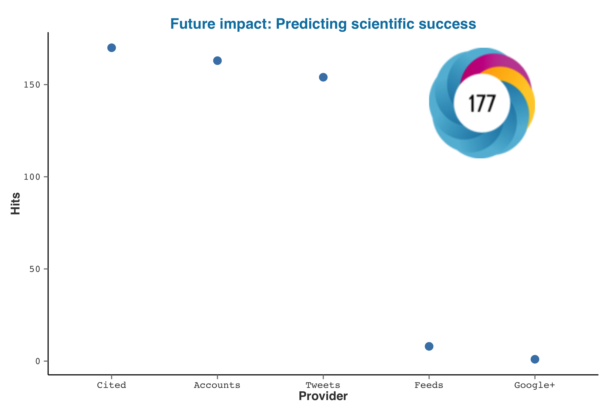

rAltmetric, v0.03
Altmetric provides metrics on publications. Their API is free to use for non-commercial use and this package includes an API key. If you need your own, request one at support at altmetric dot com.
About the package
This package provides a way to programmatically retrieve altmetric data from Altmetric for any publication with the appropriate identifer. The package is really simple to use and only has two major functions: Onealtmetrics() to download metrics and another altmetric_data() to extract the data into a data.frame. It also includes generic S3 methods to plot/print metrics for any altmetric object.
New to the idea of altmetrics? Here are a couple of articles worth reading Metrics: Do metrics matter? The altmetrics manifesto
Installing rAltmetric
First install the devtools package.
install.packages('devtools')
library(devtools)
install_github('rAltmetric', 'ropensci')
Retrieving metrics
There was a recent paper by Acuna et al that received a lot of attention on Twitter. What was the impact of that paper?
library(rAltmetric)
acuna <- altmetrics('10.1038/489201a')
> acuna
Altmetrics on: "Future impact: Predicting scientific success"
with doi 10.1038/489201a (altmetric_id: 942310) published in Nature.
provider count
1 Feeds 9
2 Google+ 1
3 Cited 174
4 Tweets 157
5 Accounts 167
Extracting metric data
> altmetric_data(acuna)
title
1 Future impact: Predicting scientific success
doi nlmid altmetric_jid issns
1 10.1038/489201a 0410462 4f6fa50a3cf058f610003160 0028-0836
journal altmetric_id schema is_oa cited_by_feeds_count
1 Nature 942310 1.5.4 FALSE 173
cited_by_gplus_count cited_by_posts_count
1 173 173
cited_by_tweeters_count cited_by_accounts_count score
1 156 166 184.598
mendeley connotea citeulike pub sci com doc
1 0 0 11 62 84 6 8
url
1 http://www.nature.com/nature/journal/v489/n7415/full/489201a.html
added_on published_on subjects scopus_subjects
1 1347471425 1347404400 science General
last_updated readers_count X1 count_all count_journal
1 1348828350 11 1 754555 13972
count_similar_age_1m count_similar_age_3m
1 22408 56213
count_similar_age_journal_1m count_similar_age_journal_3m
1 508 1035
rank_all rank_journal rank_similar_age_1m
1 754043 13759 22339
rank_similar_age_3m rank_similar_age_journal_1m
1 56074 459
rank_similar_age_journal_3m pct_all pct_journal
1 947 99.93 98.48
pct_similar_age_1m pct_similar_age_3m
1 99.69 99.75
pct_similar_age_journal_1m pct_similar_age_journal_3m
1 90.35 91.50
details_url
1 http://www.altmetric.com/details.php?citation_id=942310
acuna_data <- altmetric_data(acuna)
write.csv(acuna_data, file = 'acuna_altmetrics.csv')
Workflow
For a real world use-case, one might want to get metrics on multiple publications. If so, just read them from a spreadsheet andllply through them like the example below.
# Be sure to update the path to the supplied example csv file
doi_data <- read.csv('dois.csv', header = TRUE)
> doi_data
doi
1 10.1038/nature09210
2 10.1126/science.1187820
3 10.1016/j.tree.2011.01.009
4 10.1086/664183
library(plyr)
# First, let's retrieve the metrics.
raw_metrics <- llply(doi_data$doi, altmetrics, .progress = 'text')
# Now let's pull the data together.
metric_data <- ldply(raw_metrics, altmetric_data)
# Finally we save this to a spreadsheet for further analysis/vizualization.
write.csv(metric_data, file = "metric_data.csv")
Vizualization
For any altmetric object you can quickly plot the stats with a generic `plot` function. The plot overlays the altmetric badge and the score on the top right corner. If you prefer a customized plot, create your own with the raw data generated fromalmetric_data()

Support and Bugs
For bugs, feature requests and other issues, please submit an issue via Github.For general comments, email karthik dot ram at gmail.
License

This work is licensed under a Creative Commons Attribution 3.0 Unported License.